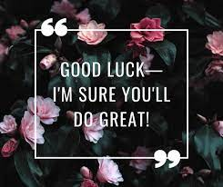

Hello, I'm Mehmet Aktif.
A senior-year design student who trying to specialize in 3D modeling & texturing.
01 / PROJECT NAME
Goblin concept digital sculpture with human-like skin.
Learned a lot of quick tips and look development.
Sculpted in ZBrush, Retopologized and UVs done in
Maya, Textured in Mari, Rendered using Arnold.

More shots from this project ↗
02 / PROJECT NAME
Subsurface weight, specular roughness,
diffuse maps generated with the procedure and manual techniques.
See case study →
03 / PROJECT NAME
Experimental creature modeling for school project.
Project WIP